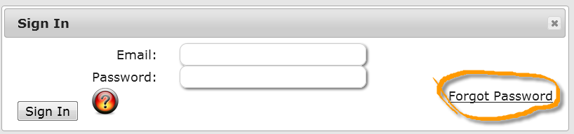
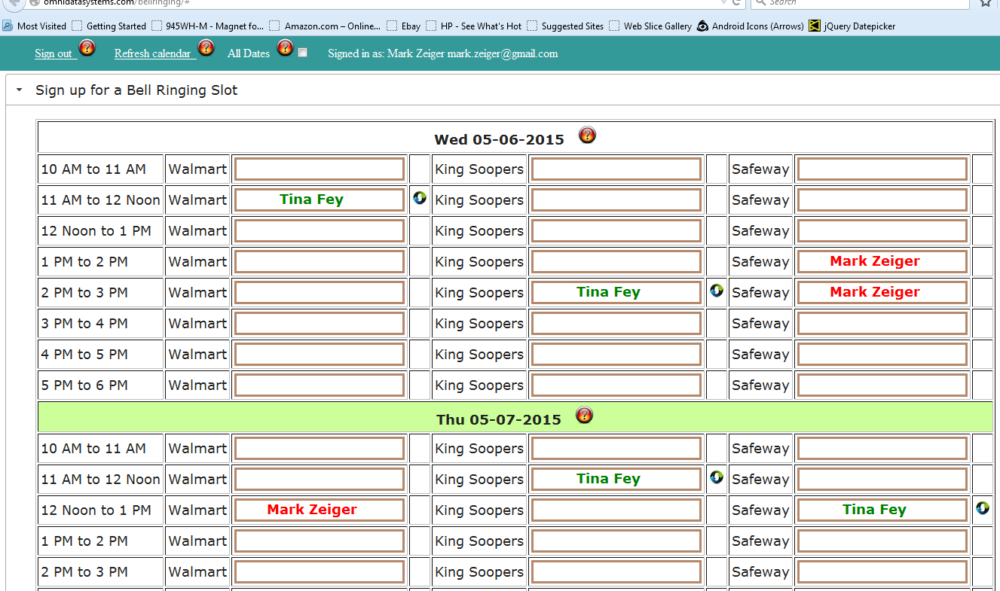

To see a video explaining this application, click here
Basic Usage
Enrollment
- You need to enroll in order to be able to sign in and select a timeslot.
- You only need to enroll once.
- After enrolling your email address will be your user name when you sign in.
Scheduling
- After signing in (email and password) the bell ringing schedule will be displayed.
- Click on an empty box (a timeslot) and your name will appear in the timeslot. Look for the confirmation dialog box.
Your name will be in red and others in green.
- To remove yourself from a timeslot click on a box with your name. Look for the confirmation dialog box.
- If you try to select an empty box at the same time you're scheduled at another location, you will get an error message.
- If you try to select a timeslot that's occupied by somebody else, you will get an error message.
- If you forget your password click on the "Forgot Password" link in the "Sign In" dialog 
and follow instructions.
- If you wish to swap times with a person, click on the
 icon next to the person and timeslot you
wish to swap and follow instructions in the dialog box.
icon next to the person and timeslot you
wish to swap and follow instructions in the dialog box.
